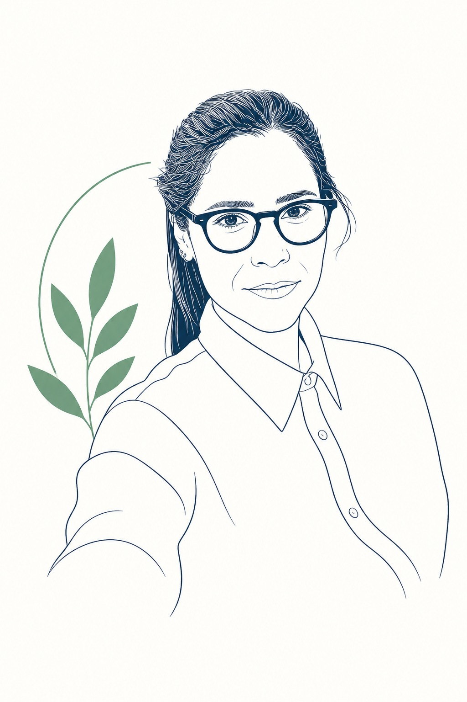

São Paulo, BrasilDo medo ao movimento.
Todo mundo tem um medo que parece maior do que a vida real. Eu decidi dedicar minha carreira a entender esse medo por dentro — e a ajudar as pessoas a atravessá-lo, degrau a degrau, com método e ciência.
Minha história, contada em 30 segundos
Como cheguei até aqui
Graduação em Psicologia, com foco em comportamento humano — o início de uma carreira dedicada a entender por que sentimos medo e como o cérebro aprende a ter coragem.
Especialização em Terapia Cognitivo-Comportamental, a abordagem com melhor evidência científica para ansiedade e fobias.
Doutorado na Universidade de Valencia, pesquisando fobias específicas e terapia de exposição — o método que hoje é o coração do meu trabalho.
Especialista em fobias, pioneira no uso de realidade virtual no tratamento, atendendo online para todo o Brasil e presencialmente na Vila Leopoldina, em São Paulo.
Se o medo está encolhendo sua vida, vamos conversar?
Especialista em fobias. Atendo online e também presencialmente na Vila Leopoldina, com exposição gradual (inclusive com realidade virtual). O primeiro passo é uma conversa.
Falar comigo